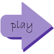
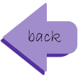

UI Elements
Point indicator
Is represented as a digit (amount of waterdrops) and the picture of waterdrop.
UI element | waterdrop
Time indicator
Is represented as the rounded rectangle and the fill. As amount of time decreases, the fill moves to the left (shrinks).
UI element | time foregroung
UI element | time background
Health indicator
Is represented as three hearts. When a player loses a life, a heart becomes empty.
UI element | heart
UI element | heart empty
Buttons
Buttons | settings
Buttons | pause
Buttons | play
Buttons | restart
Buttons | exit
Buttons | sound
Buttons | no sound
Buttons | try again
Buttons | instructions

Buttons | proceed to the game

Buttons | back to the instructions
Popup elements notifying about losing a life, getting a life, and getting a point
 UI element | plus heart
UI element | minus heart
UI element | plus waterdrop
UI element | plus heart
UI element | minus heart
UI element | plus waterdrop